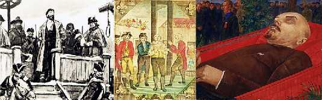

Борис Акунин
Мой календарь
Сегодня день, который побуждает задуматься о революции и революционерах, потому что 21 января - отдали Богу (или не Богу) душу три крупнейших в истории революций «селеба».
В 1775 году на Болотной площади в Москве попросил прощения у православных и лишился головы, а затем и других частей тела стихийный, народный революционер Емеля Пугачев, который, по его собственному признанию просто «погулять хотел», а чуть было не развалил Российскую империю. Главный вклад Емельяна Ивановича в российскую историю заключается в том, что после жуткого, кровавого бунта Екатерина Великая передумала давать подданным свободу - страшно стало.
В 1793 году парижским зевакам показали отрубленную голову короля Людовика Шестнадцатого, который погубил себя тем, что решил созвать народных представителей и выпустил революционного джинна из бутылки.
А в 1924 году перестало биться ледяное, безжалостное сердце Владимира Ульянова, который желал коллективно осчастливить всё огромное человечество, даже если всё оно будет состоять из несчастных маленьких человечков.
О чем же в такой день думать, спросите вы.
О том, что не надо доводить дело до революции. Она плохо заканчивается и для тех, против кого затевалась, и для тех, кто ее устроил. Побеждает всегда Смерть.